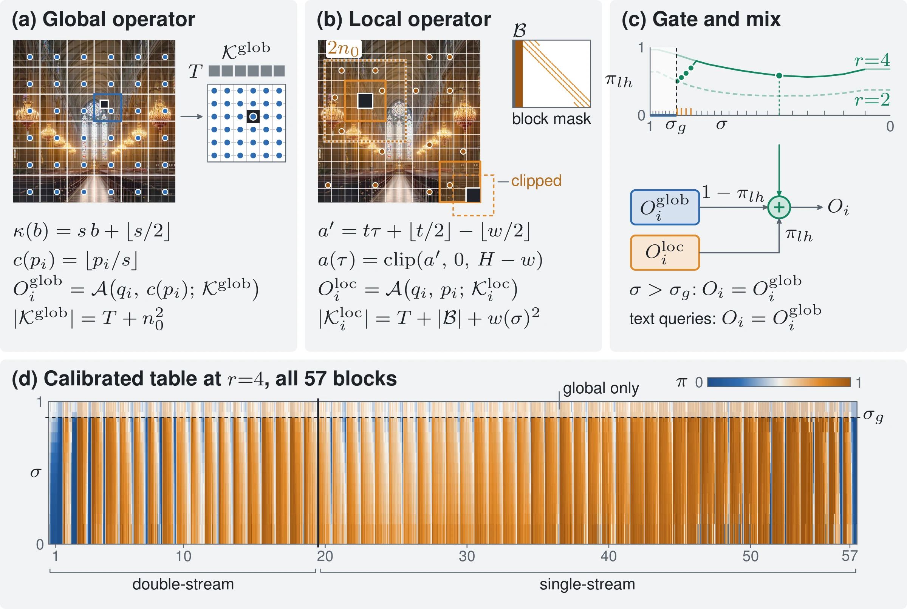

Scale-Covariant Attention
Training-free high-resolution sampling for diffusion transformers, calibrated once at 1024².
 2048 × 6144
2048 × 6144


FLUX.1-dev is trained near one megapixel. SCA lets it sample at 4096² by giving every attention head its own mix of a local window and a coarse view of the whole image. The weights, one per head, noise level and image-to-window ratio, are fitted once at 1024². At 4096² SCA takes 77.1 s per image, 2.63× less than AReA, and is significantly better than AReA on 12 of 15 metrics and worse on 0. It still repeats a person or animal in 26% of the prompts that name one, against 4% for AReA.
Abstract
Diffusion transformers trained near one megapixel fail at higher resolutions: attention meets unseen token counts and position offsets, and its cost grows quadratically. Each head's appetite for context, its balance between a local window and a coarse view of the whole image, can be measured at the training resolution and transfers to larger images. We introduce Scale-Covariant Attention (SCA), which calibrates once, fitting one weight per head, noise level, and image-to-window ratio in closed form against full attention. At the target, SCA opens with the global view alone, shrinks every window to native size over a four-step schedule, and mixes the two views with each head's weight for the current ratio. The schedule roughly halves repeated subjects: at 4096² a person or animal repeats in 26% of the 95 prompts that name one, against 57% without it and 4% for AReA. For FLUX.1-dev at 4096², SCA beats AReA on 12 of 15 metrics and runs 2.63× faster; in HRDiT's progressive schedule it matches HRDiT's preference scores in under half the time.
Method
Every attention head in FLUX.1 blends detail from nearby tokens with layout from the whole image. SCA builds both parts from keys the model saw in training, a sliding window for detail and a grid of block centres for layout, and mixes them with a weight fitted per head at 1024². At 4096² sampling runs in three phases: 8 steps with the global view alone, 4 steps whose windows shrink from 128 to 80 tokens, and 16 steps with native 64-token windows. Every window's softmax also holds 1,024 bridge tokens drawn from the whole image.

Each component up close

The appendix version of the diagram: block-centre subsampling, tiles and their windows, the bridge, the per-head mix and the emulated operators used for calibration.
1Two views per head
The local view is an exact sliding window around each 8 × 8 query tile, at the original positions, plus the text and the bridge tokens. The global view attends to the centre token of every block on a 64 × 64 grid, with coordinates rescaled to that grid. In the native phase every window offset stays in the trained range, and the cost grows linearly with the number of tokens.
2Weights fitted at 1024²
To imitate an image r times larger, we shrink the window and subsample the global view by r at 1024², where full attention still works and serves as the reference. The best weight per head, noise level and ratio has a closed form. One pass over 32 prompts fills the ratio-2 and ratio-4 tables for all 1368 heads; tables from disjoint prompt halves correlate at 0.989.
3Global-only opening
Windows that act while the image is still mostly noise can each draw their own copy of the subject. SCA therefore uses the global view alone for the first 8 of 28 steps (σ above 0.89), while the layout forms.
4Windows shrink, then stay native
The handover takes 4 steps instead of one: windows of 128, 112, 96, 80 tokens, then 64 for the last 16. Each step reads every head's weight at its own image-to-window ratio, interpolated in log scale between the ratio-2 and ratio-4 tables. The four sizes were set by hand; only the weights are calibrated.
One schedule for all heads. The 28 steps at 4096²: global view only, then windows of 128, 112, 96, 80 tokens at ratios 2, 2.29, 2.67 and 3.2, then the native window at ratio 4. Every local softmax after the opening also holds the bridge: in each cell of an 8 × 8 partition, the 16 tokens whose keys lie farthest from the mean key, recomputed at every block and step (AReA's selection rule), so a window sees subjects drawn outside it.
What the heads want

The method in motion
How SCA works, in 80 seconds. Silent, with captions drawn in the video (subtitle files: SRT, WebVTT). The images, the per-head weight tables, the window schedule and the speed figures in the video are real; the token grids are schematic. The Moai pair shows the global-only opening with the previous operator, since that development prompt has no final-operator image.
Method video file missingRender it with web/build/render_method_video.py.
Why the old operator duplicated
The first version of SCA switched every head from the global view to a native window in one step at the gate. At 4096² it repeated a person or animal in 57% of the 95 prompts that name one (49 to 57% across three seeds), more than any baseline. The copies form in the steps right after the switch. The calibrated weights barely change with the noise level, so most heads went from no local weight to their full local weight in one step, and a native-size window with all text keys looks to the model like a whole 1024² canvas while small objects are still taking shape. Duplication falls the longer the global view lasts (left): on a fixed 46-prompt subset, people or animals repeat in 20, 15 and 7 of the 26 prompts that name them for gates at σ = 0.93, 0.89 and 0.85, and in 1 with the global view alone. A later gate costs image quality, so the final operator keeps σg = 0.89 and hands over gradually, through wider windows and the bridge.
That halves the rate but does not reach AReA. At 4096² the final operator repeats a person or animal in 26% of the prompts (Wilson 95% interval 18.5 to 36.0%; 26 to 28% across three seeds), more than every baseline except SigMa (right). On the 46-prompt subset used to choose the schedule it gave 15%, so that subset understated the full-set rate. At 2048 × 4096 and 2048 × 6144 it gives 24% and 33%, against 43% and 54% without the schedule (AReA: 18% and 6%).
Gate sweep on 46 prompts
Repeated people or animals at 4096²
Same prompt, same seed: before and after
Not curated. Starting from the ice-climber prompt, these are the next prompts in id order that the detector flags for the old operator; the paper's figure shows the first three. Each crop is the 512 × 512 native-pixel square holding the most extra detections in the old image, and the final operator's image is shown at the same place whatever it draws.
Side by side at 4096²
Every method gets the same prompt and the same seed. Drag the divider on either image; both move together. The second image is the 512 × 512 window inside the white box, at native resolution. Eight prompts come from the paper's curated figures; three are random draws and are marked.
How sampling unfolds
Each video follows one 4096² sample through all 28 steps: the decoded estimate of the clean image at that step, which phase is active (global view only, shrinking windows, or native windows), the weights of all 1368 heads at that step, and a crop at native pixels. A second view plays SCA and AReA side by side.
Results
FLUX.1-dev on all 195 Aesthetic-4K prompts at 4096², one seed. Single-pass methods share one sampler: 28 steps, guidance 4.5. Intervals are paired bootstrap 95% intervals over prompts.
| Method | Steps | Time (s) ↓ | Image Reward ↑ | HPSv2.1 ↑ | Pick Score ↑ | CLIP ↑ | MUSIQc ↑ | FID ↓ | Patch FID ↓ | Dup. (%) ↓ | |
|---|---|---|---|---|---|---|---|---|---|---|---|
| clean | camp. | ||||||||||
| Single pass, shared sampler (28 steps, guidance 4.5) | |||||||||||
| Full attention | 28 | 186.5 | 196.2 | −2.18 | 7.60 | 17.94 | 15.37 | 33.1 | 312.4 | 252.2 | 7 |
| DyPE | 28 | n/m | 195.9 | −0.10 | 20.55 | 20.51 | 24.92 | 50.3 | 205.5 | 171.9 | 17 |
| SEGA | 28 | n/m | 190.4 | 0.56 | 24.34 | 21.64 | 26.95 | 50.3 | 164.9 | 125.8 | 12 |
| AReA | 28 | 202.4 | 264.4 | 0.92 | 27.16 | 22.36 | 27.69 | 50.4 | 145.8 | 102.9 | 4 |
| SCA (ours) | 28 | 77.1 | 78.4 | 1.25 | 29.73 | 23.12 | 29.14 | 60.1 | 140.2 | 98.4 | 26 |
| Multi-stage, own recipe and budget | |||||||||||
| UltraImage | 30+30 | n/m | 308.5 | 1.28 | 30.77 | 23.33 | 28.84 | 41.7 | 142.0 | 109.5 | 5 |
| HRDiT | 30+17+10 | 108.6 | 110.4 | 1.34 | 30.92 | 23.46 | 29.12 | 53.5 | 138.4 | 103.0 | 11 |
Main comparison at 4096² (paper Table 1). SCA is the final operator with the window schedule and the bridge. Seconds per image on one GH200: clean is the batch-1 median on an idle GPU, campaign the mean over the full run on shared nodes; n/m: not measured. HPSv2.1 ×100; MUSIQc is MUSIQ on 1024² crops; patch FID is our own definition and is not comparable across papers; Dup. is the share of the 95 prompts naming a person or animal in which one is repeated. Bold: best; underline: second best. Among single-pass methods SCA is best on every score but repeats subjects most often. The two multi-stage recipes use their own step counts and guidance.
SCA minus AReA, per metric
Seconds per image
Beyond the main setting
- Panoramas. At 2048 × 6144, SCA beats AReA on 7 of 15 metrics at 60.5 s against 150.5 s, but loses on aesthetic score, patch FID.
- 2048 × 4096 is mixed. The window already covers half the image height, so the per-head mix adds little over AReA's windows. SCA is better on 3 of 15 metrics and worse on 3 (aesthetic score, CLIP score, CLIP-IQA), at 41.1 s against 112.4 s.
- Two more seeds. With seed labels 1 and 2 on all 195 prompts, SCA beats AReA on 10 and 10 of the ten per-image metrics; ImageReward +0.306 and +0.264.
- FLUX.1-Krea-dev. SCA wins 8 of 15 metrics against AReA in a third of its time (78.4 s against 239.3 s) and loses patch FID (+3.4 [1.6, 7.1]); ImageReward is unresolved (+0.020 [−0.020, 0.063]).
- Inside a progressive schedule. With HRDiT's three-stage schedule and SCA attention, preference scores match HRDiT's at 50.7 s against 110.4 s per image; only CLIP-IQA is significantly worse, and HPSv2, MUSIQ, ARNIQA are better. Matching means no resolved difference, not proven equivalence. A person or animal repeats in 6% of prompts.
- HRGen-1K. The final operator's run is pending. The previous operator, without the schedule, beat AReA on all 10 per-image metrics on 1000 prompts; ImageReward +0.818 [0.768, 0.870].
- Larger squares (previous operator). At 6144², SCA without the schedule beats AReA on 14 of 15 metrics; the final operator takes 174.7 s per image there.
- FLUX.2-dev (previous operator). Calibrated on its own, SCA without the schedule beats full attention on 9 of 10 per-image metrics in about half the time; ImageReward rises from 0.75 to 1.20 (50 prompts).
From 2048² to 8192²
One prompt and seed at five sizes, taken from the timing runs; the prompt was fixed for timing, not picked for looks. Under each image is a 384 × 384 crop at native pixels, and the time is seconds per image on one GH200. Each size starts from its own noise, so the composition changes with size. The 8192² setting is exploratory: blur and block artifacts remain.
Other shapes and checkpoints
Curated samples. The FLUX.2-dev and FLUX.1-Krea-dev tables were each calibrated on 16 prompts at 1024². The FLUX.2-dev sample comes from the previous operator, without the schedule.
Against a commercial model
This section sets SCA on FLUX.1-dev, run on one GPU without training, beside Ideogram 4.0, a commercial generator, on six of the same prompts. Each pair uses the same prompt text and shows crops of 512 × 512 native pixels from each image, centred on the same point of the scene. Ideogram 4.0 generates up to about 4 megapixels (2048 × 2048 for a square) and reaches 4096² only through a separate upscaler; SCA samples 4096² (16.8 megapixels) directly. The six prompts come from our curated set, which favours SCA; the Ideogram images are first results, not picked.
The Ideogram images have not been added yet, so the right-hand panels are labelled placeholders. Ideogram's own published samples carry no permission to reuse them, so this page shows only images generated for it (instructions in web/README.md).
Where it fails
26%
of the 95 prompts that name a person or animal still show a repeated one at 4096² (25 prompts), against 4% for AReA and 57% for SCA without the schedule. The extra copies are smaller and fewer than before, but they remain SCA's most common failure. The four examples below are not curated: starting from the ice-climber prompt, they are the first prompts in id order that the detector flags for the final operator, and each crop is the native-pixel square with the most extra detections.
Without the global-only opening
Previous operator. A development prompt asking for one Moai statue. Mixing from step 1 draws several statues, and 16-token windows draw more, smaller copies. SCA without the schedule keeps one large statue, though a small second one stands far off.
Local errors
Previous operator. Curated failures of SCA without the schedule at native pixels, SCA left and AReA right in the same window. AReA shows none of these four errors.
Other limits
- Multi-stage recipes keep higher learned preference scores than single-pass SCA: HRDiT at 1.4× its time and UltraImage at 3.9×.
- The four window sizes of the schedule were chosen by hand on a 46-prompt subset that is part of the 195 evaluation prompts; on that subset duplication looked lower (15%) than on the full set.
- On FLUX.1-Krea-dev SCA loses patch FID to AReA, and at 2048 × 4096 it loses three metrics.
- At 8192², grid and stripe artifacts remain in both SCA and AReA; the 12 prompts there are exploratory and use the previous operator.
- On FLUX.2-dev (previous operator), better average metrics coexist with distorted faces in a randomly drawn portrait.
- No-reference metrics reward sharp repeated subjects, and FID at 299² sees little of the 4K detail, so the paper reports every metric with paired intervals.
Citation
@article{sca2026,
title = {Scale-Covariant Attention for Training-Free
High-Resolution Diffusion Transformers},
author = {Anonymous},
journal = {Under review},
year = {2026}
}